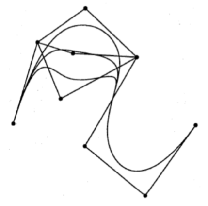

B样条
1. B样条基函数
1.1. De Boor递推
1.1.1. 单位情况
\(k\)阶（\(k-1\)度）单位B样条基函数表示为：

1.1.2. 一般情况
-
给定：结序列\(t_0<t_1<\cdots<t_n<\cdots<t_{n+k}\)
（\((t_0,t_1,\cdots,t_{n+k})\)称为结向量）
-
归一化的\(k\)阶（\(k-1\)度）单位B样条基函数\(N_{i,k}\)定义为：
\[ \begin{align} N_i^1(t)&=\begin{cases} 1,&t_i\leq t<t_{i+1}\\\\0,&\mathrm{otherwise} \end{cases}\\\\ N_{i,k}(t)&=\dfrac{t-t_i}{t_{i+k-1}-t_i}N_{i,k-1}(t)+\dfrac{t_{i+k}-t}{t_{i+k}-t_{i+1}}N_{i+1,k-1}(t) \end{align} \]其中，\(k>1\)且\(i=0,\cdots,n\)
1.2. 核心思想
- 设计基函数\(\pmb b(t)\)
- 性质：
- \(\pmb b(t)\)为\(C^2\)连续
- \(\pmb b(t)\)是三次分段多项式
- \(\pmb b(t)\)具有局部控制性质
- 叠加位移的\(\pmb b(t+i)\)组成一个整体的划分
- 对所有的\(t\)，有\(\pmb b(t)\geq 0\)
- 简而言之
- 基函数中具有所有所需的性质
- 基函数的线性组合也将有这些性质
1.3. 基函数性质
- 对\(t_i<t<t_{i+k}\)，有\(N_{i,k}(t)>0\)
- 对\(t_0<t<t_i\)或\(t_{i+k}<t<t_{n+k}\)，有\(N_{i,k}(t)=0\)
-
对\(t_{k-1}\leq t\leq t_{n+1}\)，有\(\sum_{i=1}^nN_{i,k}(t)=1\)
-
对于\(t_i\leq t_j\leq t_{i+k}\)，基函数\(N_{i,k}(t)\)在结点\(t_j\)处有\(C^{k-2}\)连续性
- 区间\([t_i,t_{i+k}]\)称为\(N_{i,k}\)的支撑（support）
2. B样条曲线
2.1. B样条曲线简介
-
给定\(n+1\)个控制点\(\pmb d_0,\cdots,\pmb d_n\in \mathbb R^3\)，结向量\(T=(t_0,\cdots,t_n,\cdots,t_{n+k})\)
-
\(k\)阶B样条曲线\(\pmb x(t)\)定义为：
\[ \pmb x(t)=\sum\limits_{i=0}^nN_{i,k}(t)\cdot\pmb d_i \] -
点\(\pmb d_i\)称为de Boor points
2.1.1. 重复结向量
- B样条曲线允许：\(T=(t_0,\cdots,t_n,\cdots,t_{n+k})\)，\(t_0\leq t_1\leq \cdots\leq t_{n+k}\)
-
只要不超过\(k\)个结重合，B样条函数\(N_{i,k}(i=0,\cdots,n)\)的递归定义依然有效
-
多结重合的效果：
- 设：\(t_0=t_1=\cdots=t_{k-1}\)
- 且\(t_{n+1}=t_{n+2}=\cdots=t_{n+k}\)
则将插值\(\pmb d_0\)和\(\pmb d_n\)
2.2. B样条的性质
2.2.1. B样条函数 vs Bernstein多项式
结向量\(T=(t_0,t_1,\cdots,t_{2k-1})=(\underbrace{0,\cdots,0}_k,\underbrace{1,\cdots,1}_k)\)下的\(k\)阶B样条函数\(N_{i,k}(i=0,\cdots,k-1)\)为\(k-1\)次Bernstein多项式\(B_i^{k-1}\)
2.2.2. 基本性质
-
给定
- \(T=(\underbrace{t_0,\cdots,t_0}_{k\ \mathrm{times}},t_k,\cdots,t_n,\underbrace{t_{n+1},\cdots,t_{n+1}}_{k\ \mathrm{times}})\)
- de Boor多边形\(\pmb d_0,\cdots,\pmb d_n\)
-
相应的B样条曲线\(\pmb x(t)\)有以下性质：
-
\(\pmb x(t_0)=\pmb d_0\)，\(\pmb x(t_{n+1})=\pmb d_n\)（边界点插值）
-
\(\dot{\pmb x}(t_0)=\dfrac{k-1}{t_k-t_0}(\pmb d_1-\pmb d_0)\)（\(\pmb d_0\)处的切线方向与\(\pmb d_n\)处相似）
-
\(\pmb x(t)\)由\(n-k+2\)个\(k-1\)次多项式曲线段构成
-
多重内部结\(\Rightarrow\)减小了\(\pmb x(t)\)的连续阶数
\(l\)重内部结\((1\leq l<k)\)意味着\(C^{k-l-1}\)阶连续
-
de Boor点的局部影响：移动\(\pmb d_i\)只会改变曲线的\([t_i,t_{i+k}]\)区间部分
-
插入新的de Boor点不会改变曲线段的多项式阶数
-
2.2.3. B样条曲线的局部性

2.2.4. B样条曲线的升阶
-
使用B样条函数
-
使用de Boor算法
与Bezier曲线的de Casteljau算法类似，在Boor多边形上进行一系列的线性插值
2.3. de Boor算法
-
给定：
de Boor点：\(\pmb d_0,\cdots,\pmb d_n\)
结向量：\((t_0,\cdots,t_{k-1}=t_0,t_k,t_{k+1},\cdots,t_n,t_{n+1},\cdots,t_{n+k}=t_{n+1})\)
-
目标：\(k\)结B样条曲线的曲线点\(\pmb x(t)\)
-
算法流程：
-
中间系数\(\pmb d_i^j(t)\)可以表示为一个下三角矩阵——de Boor图
\[ \begin{matrix} \pmb d_{r-k+1}=\pmb d^0_{r-k+1}\\\\ \pmb d_{r-k+2}=\pmb d^0_{r-k+2}&\pmb d_{r-k+2}^1\\\\ \vdots\\\\ \pmb d_{r-1}=\pmb d_{r-1}^0&\pmb d_{r-1}^1&\cdots&\pmb d_{r-1}^{k-2}\\\\ \pmb d_r=\pmb d_r^0&\pmb d_r^1&\cdots&\pmb d_r^{k-2}&\pmb d_r^{k-1}=\pmb x(t) \end{matrix} \]
2.4. B样条曲线插值
-
给定：\(n+1\)个控制点\(\pmb k_0,\cdots,\pmb k_n\)，结序列\(s_0,\cdots,s_n\)
-
目标：分段三次插值B样条曲线\(\pmb x\)
-
方法：分段三次\(\Rightarrow k=4\)
- \(\pmb x(t)\)由\(n\)段组成\(\Rightarrow n+3\)个de Boor点
-
实例：\(n=3\)

-
若选择结向量
\[ \begin{align} T&=(t_0,t_1,t_2,t_3,t_4,\cdots,t_{n+2},t_{n+3},t_{n+4},t_{n+5},t_{n+6})\\\\ &=(s_0,s_0,s_0,s_0,s_1,\cdots,s_{n-1},s_n,s_n,s_n,s_n) \end{align} \] -
插值条件：
\[ \begin{align} \pmb x(s_0)&=\pmb k_0=\pmb d_0\\\\ \pmb x(s_i)&=\pmb k_i=N_{i,4}(s_i)\pmb d_i+N_{i+1,4}(s_i)\pmb d_{i+1}+N_{i+2,4}(s_i)\pmb d_{i+2}\\\\ &\mathrm{for}\ i=1,\cdots,n-1\\\\ \pmb x(s_n)&=\pmb k_n=\pmb d_{n+2} \end{align} \] -
共计：\(n+1\)个条件解\(n+3\)个未知的de Boor点
\(\Rightarrow\) 2个终值条件
-
natural end condition
\[ \begin{align} \ddot{\pmb x}(s_0)&=0\Leftrightarrow \dfrac{\pmb d_2-\pmb d_1}{s_2-s_0}=\dfrac{\pmb d_1-\pmb d_0}{s_1-s_0}\\\\ \ddot{\pmb x}(s_n)&=0\Leftrightarrow \dfrac{\pmb d_{n+2}-\pmb d_{n+1}}{s_n-s_{n-1}}=\dfrac{\pmb d_{n+1}-\pmb d_n}{s_n-s_{n-2}} \end{align} \] -
结果可以表示为求解对角系统方程：
\[ \begin{pmatrix} 1\\\\ \alpha_0&\beta_0&\gamma_0\\\\ &\alpha_1&\beta_1&\gamma_1\\\\ &&&\ddots\\\\ &&&&\alpha_{n-1}&\beta_{n-1}&\gamma_{n-1}\\\\ &&&&&\alpha_n&\beta_n&\gamma_n\\\\ &&&&&&&1 \end{pmatrix} \begin{pmatrix} \pmb d_0\\\\\pmb d_1\\\\\pmb d_2\\\\\vdots\\\\\pmb d_n\\\\ \pmb d_{n+1}\\\\\pmb d_{n+2} \end{pmatrix}= \begin{pmatrix} \pmb k_0\\\\\pmb 0\\\\\pmb k_1\\\\\vdots\\\\\pmb k_{n-1}\\\\ \pmb 0\\\\\pmb k_{n} \end{pmatrix} \]其中，
\[ \begin{align} \alpha_0&=s_2-s_0\\\\ \beta_0&=-(s_2-s_0)-(s_1-s_0)\\\\ \gamma_0&=s_1-s_0\\\\ \\\\ \alpha_n&=s_n-s_{n-1}\\\\ \beta_n&=-(s_n-s_{n-1})-(s_n-s_{n-2})\\\\ \gamma_n&=s_n-s_{n-2}\\\\ \\\\ \alpha_i&=N_{i,4}(s_i)\\\\ \beta_i&=N_{i+1,4}(s_i)\\\\ \gamma_i&=N_{i+2,4}(s_i)\\\\ \mathrm{for}&\ i=1,\cdots,n-1 \end{align} \] -
解法
- 托马斯算法——解决对角系统方程
- 复杂度\(O(n)\)
- 仅适用于对角占优矩阵
对于对角系统方程
\[ \begin{pmatrix} b_1&c_1&&&0\\\\ a_2&b_2&c_2\\\\ &a_3&b_3&\cdot&\\\\ &&\cdot&\cdot&c_{n-1}\\\\ 0&&&a_n&b_n \end{pmatrix} \begin{pmatrix} x_1\\\\x_2\\\\\vdots\\\\x_n \end{pmatrix}= \begin{pmatrix} d_1\\\\d_2\\\\\vdots\\\\d_n \end{pmatrix} \]求解流程：
-
前向消除阶段
-
后向替代阶段
2.5. Bezier曲线转B样条曲线
-
给定
控制点：\(\pmb k_0,\cdots,\pmb k_n\)
结序列：\(t_0,\cdots,t_n\)
2个终值条件
\(\pmb b_0,\cdots,\pmb b_{3n}\)：用于\(C^2\)连续插值三次Bezier样条曲线的Bezier点
-
目标：一些B样条形式的曲线
-
结向量
\[ T=(t_0,t_0,t_0,t_0,t_1,\cdots,t_{n-1},t_n,t_n,t_n,t_n) \] -
\(\pmb d_0,\cdots,\pmb d_{n+2}\)由下列式子决定：
\[ \begin{align} \pmb d_0&=\pmb b_0\\\\ \pmb d_1&=\pmb b_1\\\\ \pmb d_i&=\pmb b_{3i-4}+\frac{\Delta_{i-1}}{\Delta_{i-2}}(\pmb b_{3i-4}-\pmb b_{3i-5})\ \mathrm{for}\ i=2,\cdots,n\\\\ \pmb d_{n+1}&=\pmb b_{3n-1}\\\\ \pmb d_{n+2}&=\pmb b_{3n} \end{align} \]其中，\(\Delta_i=t_{i+1}-t_i\quad \mathrm{for}\quad i=0,\cdots,n-1\)
-
逆问题同样可解
3. Bezier和B样条曲线小结
- 由\(n+1\)个控制点\(\pmb b_0,\cdots,b_n\)决定的Bezier曲线
- \(n\)次多项式曲线
- 由控制点唯一确定
- 边界点作插值，其他点作逼近
- 控制点的伪局部影响
- 由控制点\(\pmb k_0,\cdots,\pmb k_n\)插值的三次Bezier样条曲线
- 由\(n\)个分段三次曲线段组成
- 控制点处有\(C^2\)连续性
- 由参数化（如结序列）和两个终值条件唯一确定
- 插值所有控制点
- 控制点的伪局部影响
- 由控制点\(\pmb d_0,\cdots,\pmb d_n\)和结向量\(T=(t_0,t_0,t_0,t_0,t_1,\cdots,t_{n-1},t_n,t_n,t_n,t_n)\)得到的分段三次B样条曲线
- 由在结点处具有\(C^2\)连续状态的\(n-2\)条分段三次曲线段组成
- 由\(\pmb d_i\)和\(T\)唯一确定
- 边界点插值，其余点逼近
- de Boor点局部影响
- 通过控制点\(\pmb k_0,\cdots,k_n\)插值三次B样条
- 对每个\(x,y,z\)分量，可以使用2个终值条件和求解一个对角线矩阵系统方程来实现类似3.的效果
- 与2. 的曲线相同